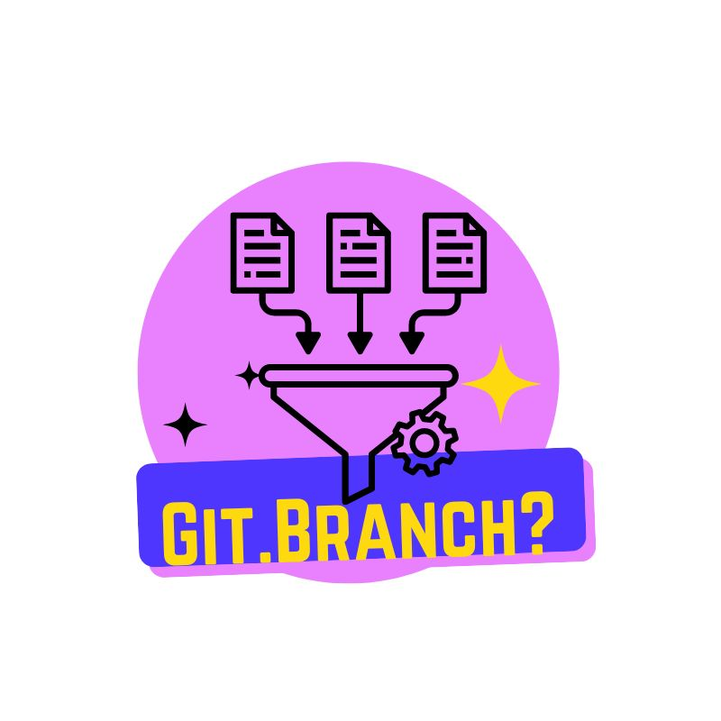

What is the purpose of a wireframe?
A wireframe is a visual representation of a webpage or application's layout. It's a low-fidelity design, focusing on the structure and arrangement of elements rather than visual details like colors or fonts. Wireframes help in planning the user interface and user experience before moving to more detailed design stages.
Learn More

What is the purpose of a README file?
A README file is a crucial document typically included in the root directory of a software project. It serves as an introduction to the project, providing essential information for developers and users. Think of it as the project's welcome guide.
Learn More

What is a branch in Git?
In Git, a branch is a separate line of development. It allows developers to work on new features or bug fixes without affecting the main codebase (often called the "main" or "master" branch). This isolation is crucial for maintaining stability and enabling parallel development. Once the changes are tested and approved, the branch can be merged back into the main branch.
Learn More